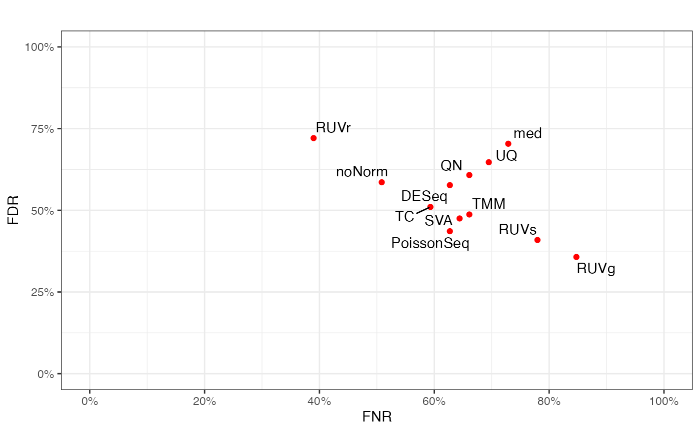

Introduction to PRECISION.SEQ Figure Functions
Intro_Figure.Rmd
rm(list = ls())
library(precision.seq)
library(Biobase)
library(vsn)
library(limma)
library(ggplotify)We include a number of functions for comparing the data distribution and differential-expression-analysis results for the test data (before and after normalization) with these for the benchmark data in this package.
Differential Expression Analysis List
There are three types of objects needed for figures – 1) raw data; 2) single list of DEA results; 3) list of multiple DEA results for different normalization methods.
## Normalize test data using internal normalization functions
test.norm <- pip.norm(raw=data.test, groups=data.group, norm.method = "all")
#> converting counts to integer mode
#> 328 genes has been filtered because they contains too small number of reads across the experiments.Number of significant surrogate variables is: 1
#> Iteration (out of 5 ):1 2 3 4 5
test.DE <- list(
TMM = DE.voom(RC=test.norm$TMM$dat.normed, groups = data.group),
TC = DE.voom(RC=test.norm$TC$dat.normed, groups = data.group),
UQ = DE.voom(RC=test.norm$UQ$dat.normed, groups = data.group),
med = DE.voom(RC=test.norm$med$dat.normed, groups = data.group),
DESeq = DE.voom(RC=test.norm$DESeq$dat.normed, groups = data.group),
PoissonSeq = DE.voom(RC=test.norm$PoissonSeq$dat.normed, groups = data.group),
QN = DE.voom(RC=test.norm$QN$dat.normed, groups = data.group),
RUVg = DE.voom(RC=data.test, groups = data.group,normalized=FALSE, adjust=test.norm$RUVg$adjust.factor),
RUVs = DE.voom(RC=data.test, groups = data.group,normalized=FALSE, adjust=test.norm$RUVs$adjust.factor),
RUVr = DE.voom(RC=data.test, groups = data.group, normalized=FALSE, adjust=test.norm$RUVr$adjust.factor),
SVA = DE.voom(RC=data.test, groups = data.group,normalized=FALSE, adjust=test.norm$SVA$adjust.factor),
noNorm = DE.voom(RC=data.test, groups = data.group))
benchmark.DE <- DE.voom(RC=data.benchmark, groups = data.group)Relative Log Expression Plot
Relative log expression plot is the sample-specific boxplots showing the data deviation of each sample from the median counts across all samples.
fig.RLE(data.test, data.group, "test without normalization")
#> Warning: Removed 367 rows containing non-finite values (stat_boxplot).
Venn Diagram
Venn diagram is used to identify the performance of different normalization methods based on intersection of DE genes using a pair of data.
fig.venn(benchmark.DE$p.val, test.DE[[1]]$p.val, Pvalue = 0.01)
Scatterplot for FNR and FDR
False Negative Rate (FNR) and False Discovery Rate (FDR) are calculated for each normalization method in the test data by comparing against the differential expression status based on the benchmark data as a gold standard. Scatter plot is used to plot the FNRs and FDRs among the normalization methods under study. Besides the benchmark-data-based gold standard, users also have the option of inputting an alternative golden standard (in the form of a list of miRNA/marker names).
fig.FDR_FNR(test.DE, benchmark.DE, title = "")
Concordance at The Top Plot
Concordance at the top plot compares the concordance of the p-values for differential expression assessed in the test data (before and after normalization) versus that in the benchmark data. Besides the nine normalization methods included in this package, additional normalization methods implemented by the user can also be used and assessed against the benchmark through inputting the p-values of DEA.
fig.CAT(test.DE, benchmark.DE, title = "")Dendrogram for Method Clustering
Dendrogram clusters the p-values for differential expression on the same dataset obtained through different normalization methods, which could be used to visualize the similarity among different normalization methods.
fig.dendrogram(lapply(test.DE, function(x) x$p.val), title="")